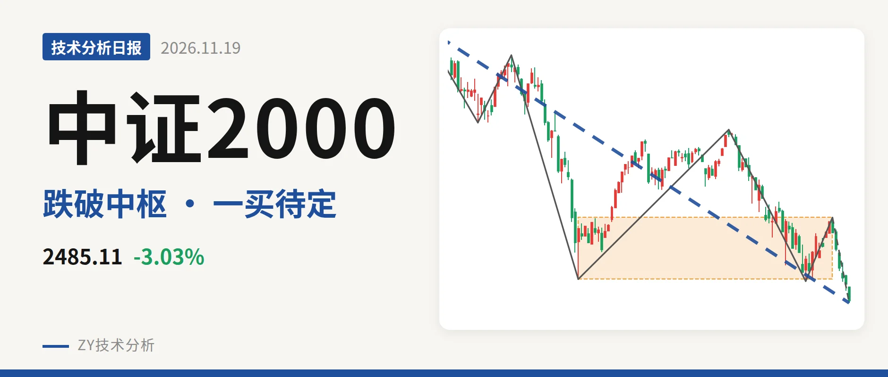
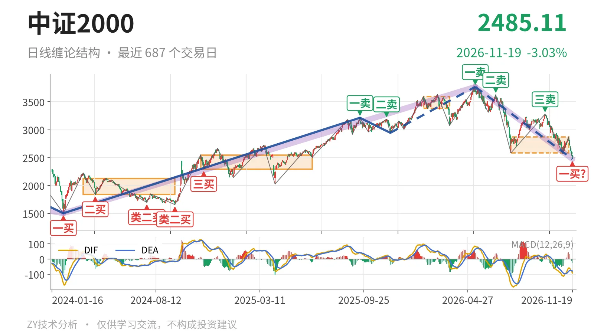
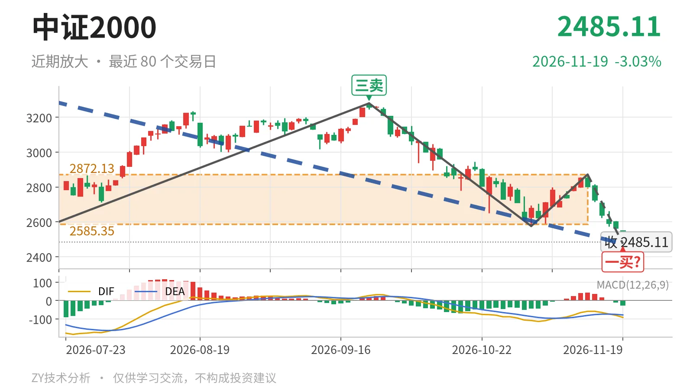

中证2000｜跌破2585中枢 暂定一买看2475

最近日线中枢 2585.35—2872.13点，收盘位于中枢之下
一句话：日线跌破2585点中枢下沿，11月19日暂定一买仍需后续验证。
📉 走势结构：大级别上涨未坏，日线下跌段还在延续
更大级别走势上，2024年2月6日至2026年5月14日的上涨段累计上涨约150.6%，结构没有被破坏。2026年5月14日以来的下跌段跌约34.3%，当前没有结束。日线线段上，5月14日至11月19日的下跌线段仍在延续；2025年11月21日至2026年5月14日的上涨线段也还没有结束信号。因此当前是更大级别上涨中的日线深调，而不是更大级别上涨段被反转。

🧭 中枢与位置：跌破2585点下沿，中枢明显下移
最近的日线笔中枢是7月21日至11月12日中枢，区间2585.35—2872.13点，目前未完成。相较之下，1月26日至3月23日的日线笔中枢在3381.36—3593.19点，中枢明显下移。最新收盘2485.11点低于下沿2585.35点约3.9%，已经离开中枢。下沿2585点附近因此成为反抽的第一结构位。
📌 买卖点：卖点一个比一个低，2475点暂定一买
日线笔级别上，5月14日一卖在3768.08点，6月23日二卖在3626.48点，9月22日三卖在3280.29点，三个卖点一个比一个低。11月19日最低2474.77点形成一买，但所在11月12日至11月19日的下跌笔还在延续，只能算暂定的一买。线段级别上，11月19日类二买也在2474.77点，所在5月14日至11月19日线段没有结束，同样待定。后续若创出新低，这些买点只对应更小级别。

⚡ 背驰：当前笔仅呈新低不新弱，面积未完成
背驰观察看同向下跌笔。9月22日至11月2日的下跌笔跌21.5%，绿柱面积873，DIF低点-108.5；11月12日至11月19日的下跌笔跌13.8%，价格低点2474.77点低于2576.02点，但绿柱面积37，DIF低点-91.6。价格新低而DIF未新低，暂呈新低不新弱。这笔仅走6根K线，面积还会继续变化，不能算作已完成背驰。日线MACD中DIF为-91.6，仍在零轴下，柱体-26.4，空头结构未改。
🔍 关键位置观察：站不回2585点，三卖结构就成立
当前价格已跌破最近日线笔中枢下沿，关键看反抽位置。反抽若回不到2585点附近上方，对7月21日至11月12日中枢的三卖结构就成立，下跌段仍会占优。重新站上2872点附近，则当前离开更可能只是中枢扩展。下方2475点附近若被后续新低打破，11月19日的一买只对应更小级别。整体看，价格在中枢下方、DIF在零轴下，结构偏弱，弱在反抽未回中枢前仍属三卖压制。
⚠️ 本文为基于公开行情数据的缠论技术结构记录，由程序自动计算并生成，仅供学习交流，不构成任何投资建议。市场有风险，投资需谨慎。